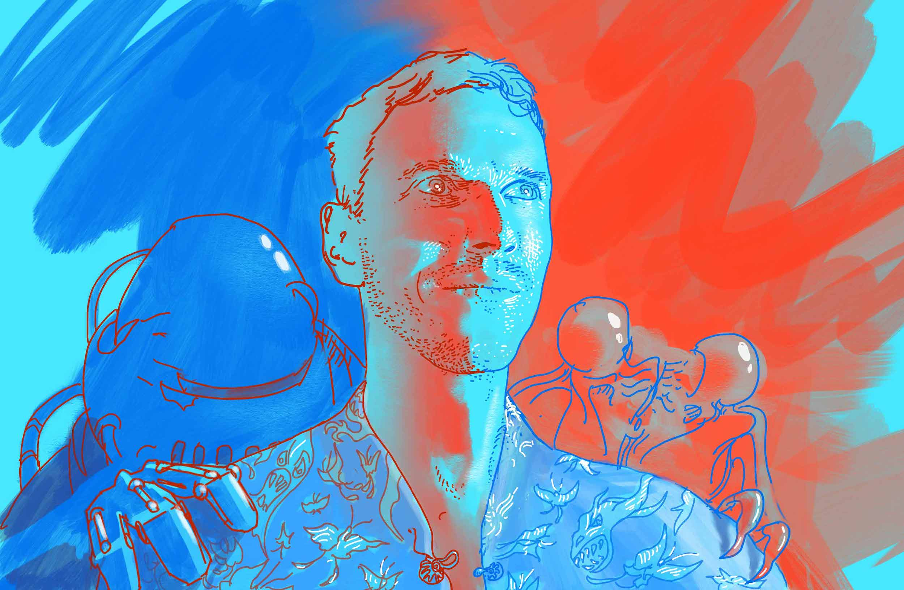

Bill Tribble
Multimedia artist and designer
Digital product designer, musician, and co-host of the Awake In mindfulness podcast. Public speaker and writer.
I create instruments, interfaces, and audio-visual experiences.
I mentor aspiring designers, and I’ve taught design for Adobe, General Assembly, and Designlab.
Also: Design Sprint and Shape Up advocate, tech ethics moderator.

Experience
I’m based in London, and I’ve worked with a range of companies around the world, as a freelancer and in-house.
